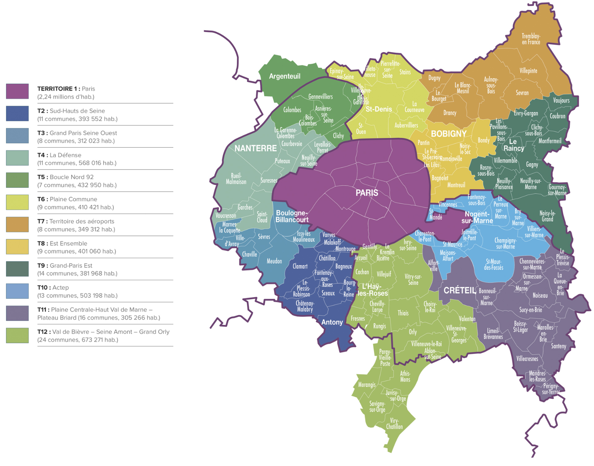
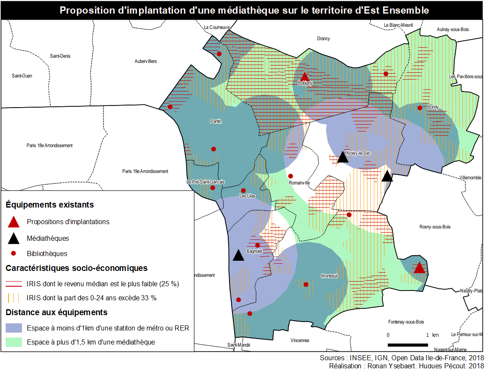
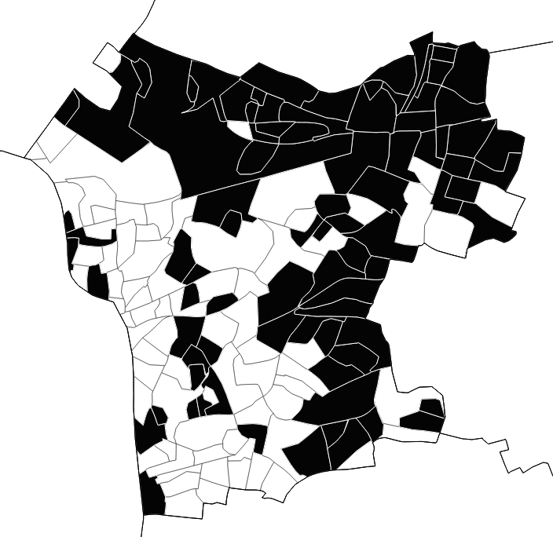
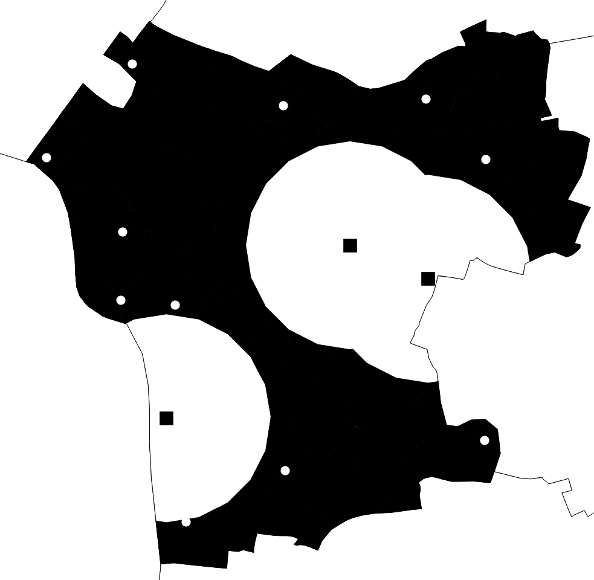
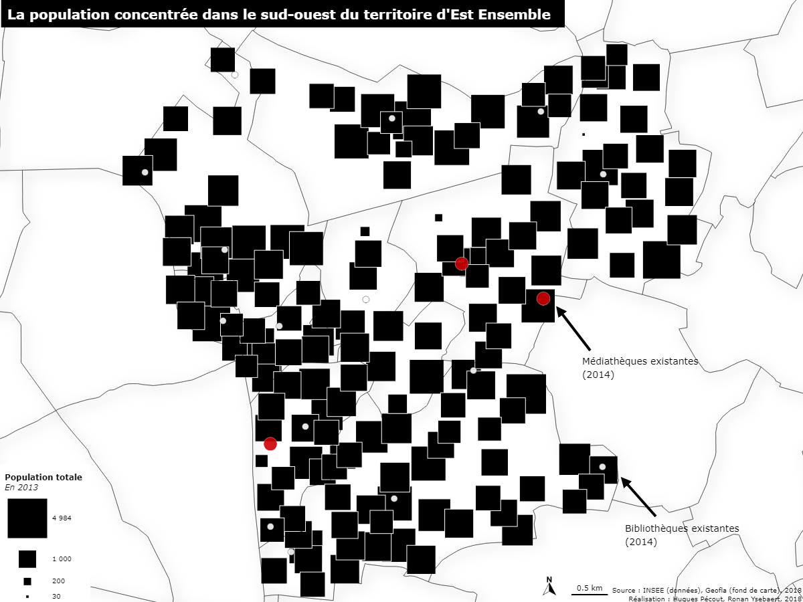
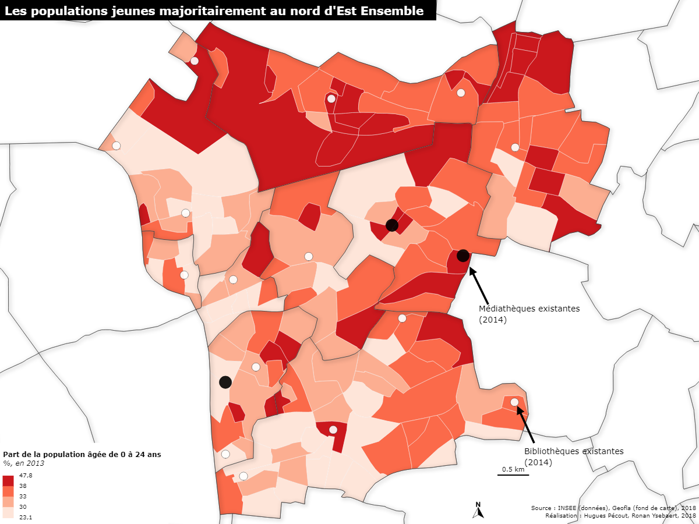
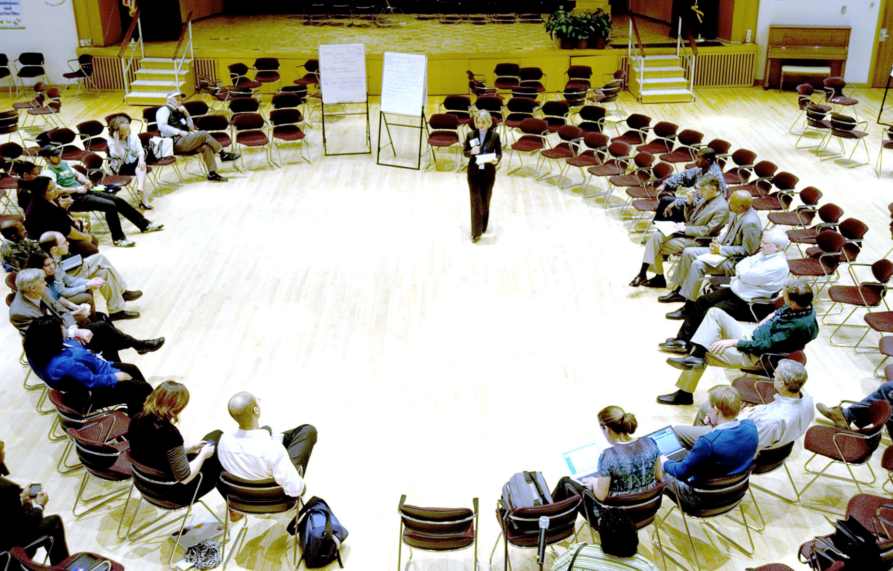
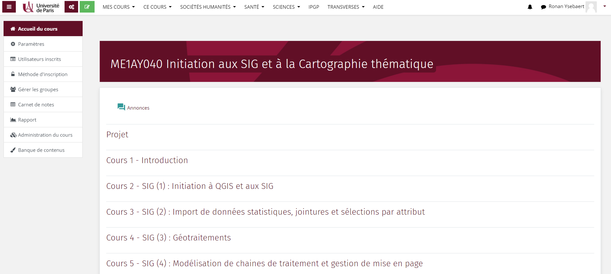

Information géographique
Cours d’initiation - Informations pratiques
2025-10-15
Objectifs
Pourquoi cet enseignement ?
L’information géographique favorise la connaissance, l’analyse et le suivi des territoires, ainsi que leur aménagement.
De nombreux secteurs professionnels la mobilise : Agriculture, aménagement, automobile, assurance et banque, bâtiment et travaux publics, défense, eau et assainissement, électricité, enseignement, environnement, épidémiologie, géologie, géomarketing, immobilier, ingénierie logistique, ressources naturelles, santé, services d’urgence, télécommunications, tourisme, urbanisme…
Quelque soit le secteur professionnel dans lequel vous évoluerez, vous pouvez être amenés à consulter, utiliser, analyser, représenter ou produire de l’information géographique.
–> Apprendre à…
Identifier, définir et caractériser l’information géographique
Manipuler de l’information géographique dans un environnement SIG (initiation au logiciel QGIS).
Cartographier de l’information géographique (initiation au logiciel de cartographie thématique Magrit).
Tendre vers l’autonomie, savoir poser les bonnes questions et identifier les outils et méthodes adéquats pour manipuler l’information géographique.
Calendrier et modalités d’évaluation
8 séances de 2h15 (salles 375-377) (Octobre - Décembre)
Dossier à composer en binôme : 2/3 de la note finale
Examen terminal, épreuve écrite : 1/3 de la note finale
Session de rattrapage : épreuve écrite
Le dossier…
Est un travail à réaliser en binôme.
Comptera pour 2/3 de la note finale.
Rendu attendu au plus tard le vendredi 9 janvier 2026, au format papier en bureau 707 (ODG), ou par envoi par mail au format .pdf (accusé réception faisant foi).
Vous aurez l’occasion de travailler et d’avancer sur votre dossier durant de nombreuses séances. Profitez-en !
Mise en situation
Vous êtes membre d’un bureau d’étude chargé de réaliser une pré-étude pour l’implantation d’un nouvel équipement public dans une des communautés d’agglomération de la Métropole du Grand Paris.
L’objectif de cette pré-étude est de proposer une zone d’implantation pour ce nouvel équipement, en vous basant sur plusieurs critères que vous aurez préalablement déterminé et justifié.
Vous devez livrer un document, de 15 à 30 pages, qui résume l’ensemble de vos choix, de votre démarche et de vos traitements qui vous ont permis de déterminer une (voire plusieurs) zone d’implantation optimale.
L’heure du choix
1) Choisissez une des communautés d’agglomérations de la MGP

2) Choisissez un équipement parmi ces propositions :
Médiathèque
Conservatoire de musique
Salle de cinéma
Mission locale pour l’emploi
Maison de retraite
Nouvelles ruches
Hôtels à insectes
Abris d’écoute à oiseaux
La localisation de ces équipements a préalablement été collectée par vos enseignants. Vous êtes libres de choisir d’autres équipements, mais il faudra récupérer vous-même ces données.
SIG et réflexion (14 points)
Introduisez votre espace d’étude et l’équipement que vous souhaitez implanter. Expliquer pourquoi l’implantation de ce nouvel équipement vous semble pertinent. (1 point)
Présentez les critères d’implantation (4 minimum) choisis pour déterminer la localisation optimale. Justifiez la pertinence de vos critères. N’hésitez pas à vous appuyer sur de la documentation ! (3 points)
Restituez les étapes de traitement SIG qui vous ont permis de déterminer la ou les zones optimales (3 points). Concluez cette partie par une carte de synthèse résumant l’ensemble de la démarche et le ou les choix de localisation proposés. (3 points)
Illustrez graphiquement la chaîne de traitement mise en oeuvre. (2 points)
Proposez des critères d’implémentation supplémentaires qui pourraient améliorer la qualité votre étude (2 points).
Cartographie thématique (6 points)
Votre rapport devra contenir (au moins) 3 cartes thématiques :
Une carte représentant des données quantitatives absolues (2 points) Ex : Nombre d’habitants par commune.
Une carte représentant des données quantitatives relatives (2 points)
Ex : Part des moins de 25 ans par commune.Une carte représentant des données qualitatives (2 points)
Ex : Carte de localisation et présentation de votre espace d’étude.
Pour vous guider…
Un exemple type
Pour vous guider dans votre projet et vous initier à QGIS et MAGRIT, tous les tutoriels et démonstrations seront réalisés à partir du même exemple : L’implantation d’une médiathèque au sein de la CA Est-Ensemble.
A la racine de l’archive infogeo-data, le document TP-SIG présente dans le détail les attendus de ce projet, ainsi que les données que vous pouvez mobiliser pour votre projet.

Vous ne pouvez pas choisir cet exemple pour votre projet !
Séance 1 : Introduction (15/10)
Cours
Information géographique : Définition, sources, méthodes et outils.
Projet SIG : problématique, consignes et données mises à disposition.
Atelier
- Rechercher des données géographiques depuis des portails dédiés.
Séance 2 : SIG (1) (22/10)
Cours
Information géographique : Coordonnées géographiques & projection cartographique.
Information géographique : Introduction aux SIG.
Atelier
Présentation de QGIS.
Importer de l’information géographique.
Gestion des projections cartographiques.
Gestion des styles graphiques.

Import de l’espace d’étude (polygones) et des équipements existants (points)
Séance 3 : SIG (2) (29/10)
Cours - Atelier
Import de données statistiques.
Jointure de données.
Sélection d’entités par attribut ou par localisation.
Enregistrement d’une sélection.

Sélection des entités caractérisées par une valeur supérieure à… pour tel indicateur
Séance 4 : SIG (3) (05/11)
Cours - Atelier
Géotraitements.
Formalisation graphique d’une chaîne de traitement.

Sélection des espaces à plus de xx mètres de xx points
Séance 5 : SIG (4) (12/11)
Cours - Atelier
Définir son implantation optimale.
Gestionnaire de mise en page.
Séance 6 : Cartographie thématique (1) (19/11)
Cours
Introduction à la cartographie thématique.
Spécificités des données quantitatives absolues.
Atelier
Présentation du logiciel Magrit.
Cartographier des données quantitatives absolues.
Mettre en page sa carte.

Séance 7 : Cartographie thématique (2) (26/11)
Cours
- Spécificité des données quantitatives relatives (discrétisation) et qualitatives.
Atelier
- Cartographier ces données avec Magrit.

Séance 8 : Conclusion (03/12)
Révisions en vue de l’examen terminal.
Travail collectif sur votre projet.

Accéder aux cours
Moodle Université de Paris
Cours : ME1AY040 - Initiation aux SIG et à la cartographie thématique.

Des questions ?
Nous joindre
M1 MECI :heloise.chauvel@etu.u-paris.fr
M1 SDV :louis.laurian@cnrs.fr